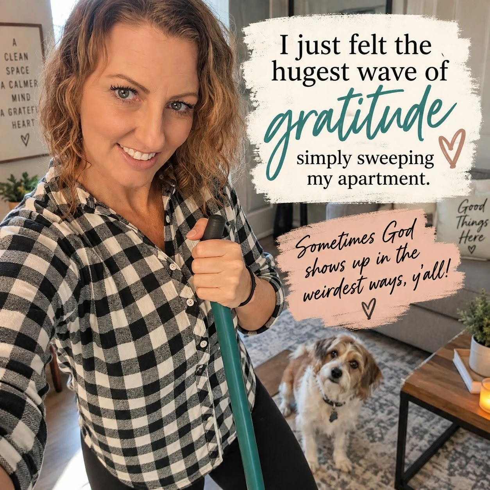

Exactly 10 months out of prison
I don’t remember exactly when it happened. There wasn’t some huge moment where I stopped and thought, Wow. I’m free.
I just left my stuff in the bathroom.
It started with my shampoo and conditioner. I left it there in the shower and walked away.
That probably sounds completely insignificant to most people, but it wasn’t to me.
I spent over four years in prison, where you didn’t just leave your things in the shower, and if you did, you definitely didn’t assume they’d still be there when you came back. My belongings stayed with me. That’s how it worked. I carried what I needed to the shower in a contraband shower bag, used it, and carried it back to my bunk.
Then I came home from prison, but some habits took longer than others to break. But if I’m being fair, I wasn’t exactly stable before prison either. There were times when I was never 100% certain I’d be coming back to the same place each day, so I learned to keep my belongings with me. Then prison just reinforced it.
When I got out, I moved into a halfway house. The other girls picked spots in our shared bathrooms and left their toiletries there like normal people. Not me. I had a plastic tote bag at the end of my bed, and every time I went into the bathroom, it came with me. When I was done, it came right back out.
Hayley asked me about it once, and I just shook my head. No explanation.
Then I got kicked out of the halfway house, and every move I made over the next six weeks only validated the fear I’d been carrying around with that stupid little plastic bag. See? Don’t get comfortable. Always be ready to run. Homelessness, addiction, instability, and prison had all taught me that same lesson in different ways.
It’s a sad way to live, but five months out of prison, I was still living that way. I refused to own more than two duffel bags of stuff. Easier to pack up and go, just in case, I’d say. You just never know.
Then one morning, I walked into the bathroom and noticed my shampoo sitting in the shower.
Apparently, I had left it there the night before.
I just stared at it for a second and then started laughing. I had been renting a room from a great person for months. I had my own bathroom. I was safe there. Nobody was threatening to throw me out. Nobody was telling me to pack my shit. There was absolutely no logical reason I couldn’t leave a bottle of shampoo in the shower. I just couldn’t bring myself to do it.
But apparently the night before, without even realizing it, I finally had. So next I did something even crazier and I left it there.
Somewhere along the way, I had started feeling safe. Stable. Secure. I had consistency. All the things I’d craved for most of my life were creeping in so slowly and quietly that I almost didn’t notice them.
I wasn’t worried I’d come home from work and suddenly be unwelcome. I wasn’t planning where I’d go next. I wasn’t living out of a bag. Some part of me had finally started believing, I get to come back here.
Now don’t start thinking crazy like I left my toothbrush too. Baby steps, okay? That took a little longer.
Before I got out of prison, I imagined freedom in huge moments. Walking through the gate. Seeing my family. Getting a job. Driving again. Having money in my own bank account. And those things absolutely mattered.
But nobody told me that sometimes freedom would sneak up on me in a bathroom. Nobody told me about the moments when my brain would suddenly realize, Oh. We don’t have to do that anymore.
Once I noticed it, I started seeing those moments everywhere. I could decide when to shower. I could choose what shampoo I wanted. I could close the bathroom door and be alone. I could buy something without worrying about whether it was sold on commissary and would get taken. LOL.
I didn’t have to carry everything with me anymore. I didn’t have to be ready to run.
Freedom doesn’t always arrive looking like freedom. Sometimes it looks so ordinary I almost miss it. Like this post on Facebook from a few days ago:

Today, I have my own apartment, and y’all, I have way more than two duffel bags. I have a bathroom absolutely full of my stuff. My shampoo stays in my shower, and my toothbrush stays by my sink.
Some days I still wake up and think someone is going to tap me on the shoulder and say, “I’m sorry, ma’am. This actually isn’t your life. We gave you the wrong one and have to ask you to return it.”
But I’m getting there.
I spent so much of my life being ready to run that I didn’t know how to recognize the moment I finally felt safe enough to stop.
I guess sometimes God’s biggest blessings show up in the most ordinary places. Sometimes freedom simply feels like leaving my shampoo in the shower and walking away.